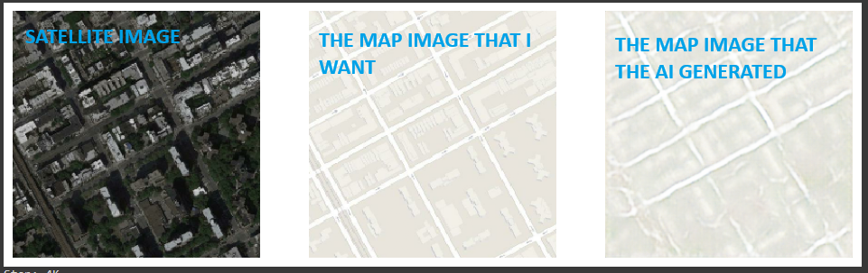
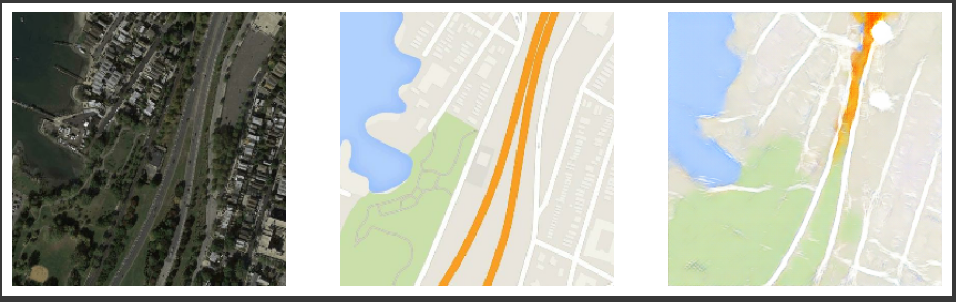
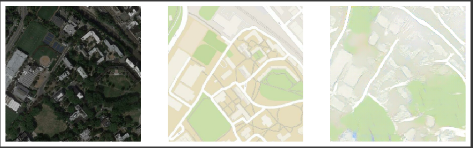

This AI was created as part of the coursework of Generative Adversarial Networks (GANs): Complete Guide on Udemy.
The purpose of this AI is to take a satellite image (left) and generate a street view image (middle). The AI is capable of generating the image on the right. Three different examples are shown.
  I think that this is the best I can reasonably expect. Some of the roads are impossible to see in the satellite image. And it's pretty difficult to tell the difference between a highway and a road based on the image alone. You need more information to really make that distinction.
Personally, I think that the AI is better at identifying green patches than the actual map images are.
The AI also struggles to interpret buildings and other objects. To be fair, the map views totally ignore a lot of that stuff, so the AI doesn't really have a great basis to learn from.